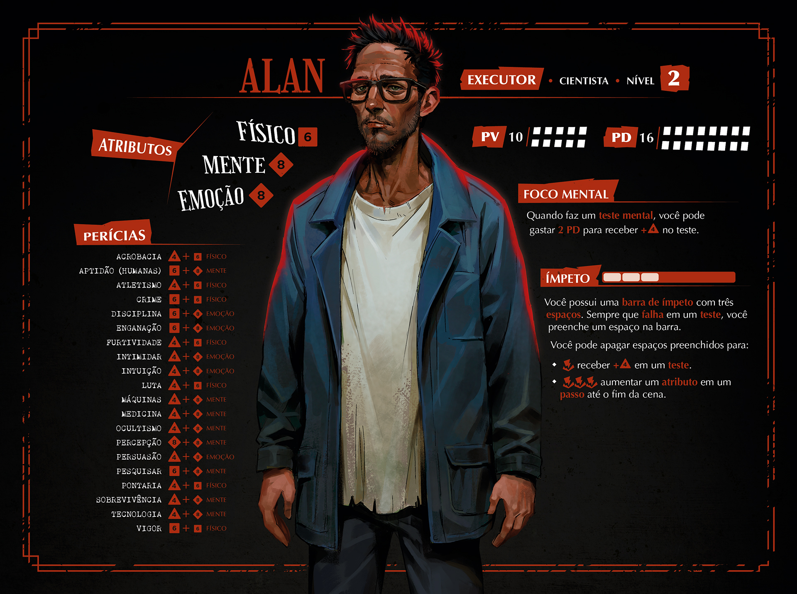
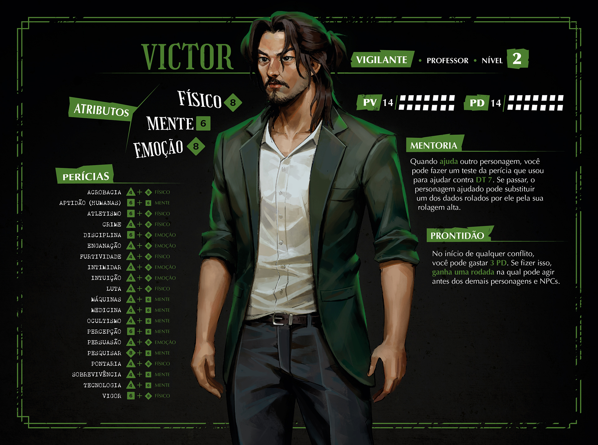
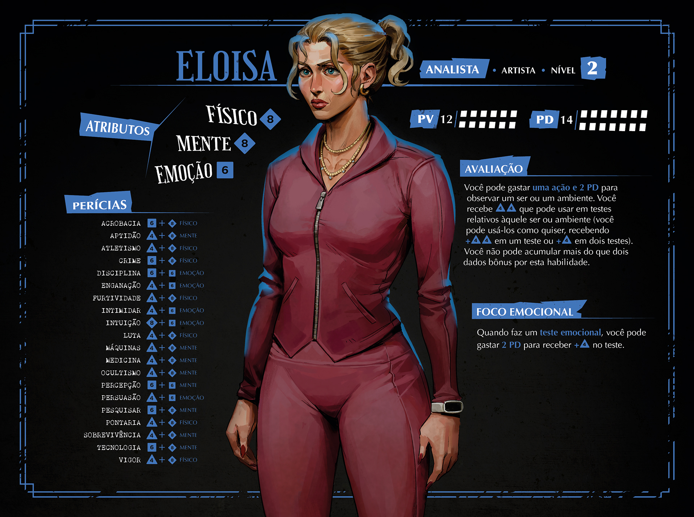
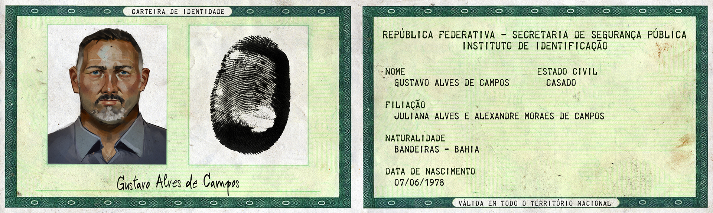
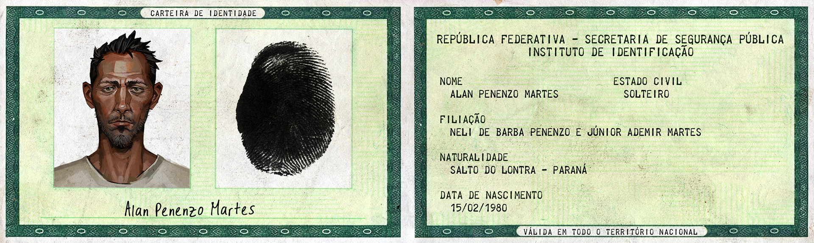
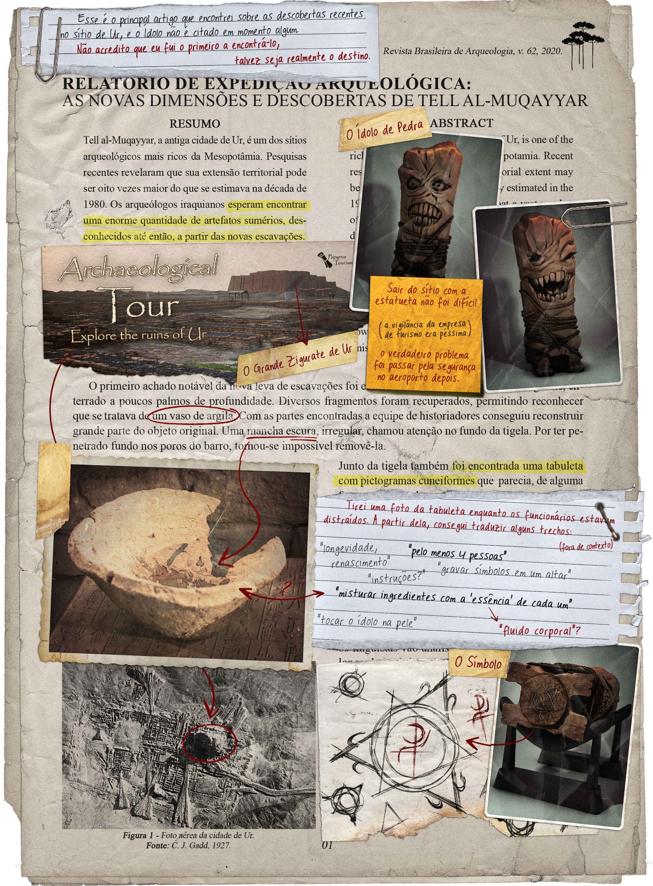
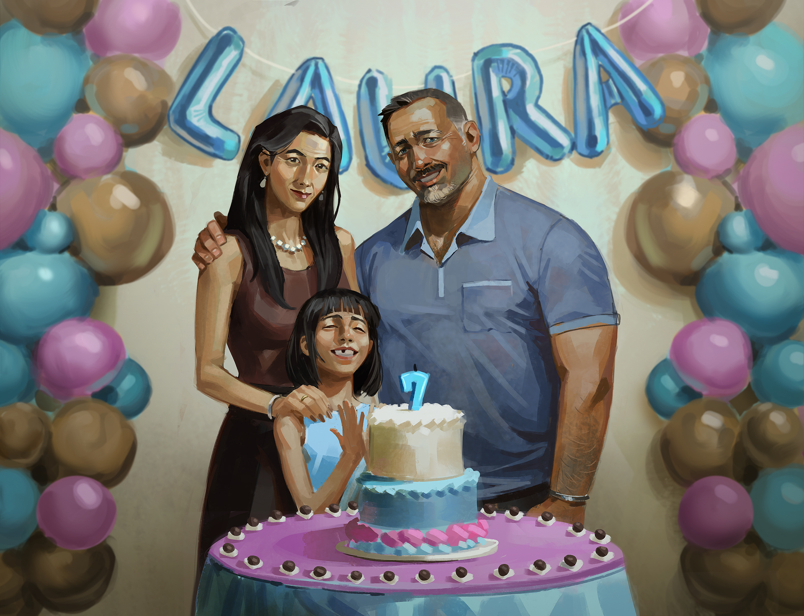

FICHA · ALAN

FICHA · VICTOR

FICHA · ELOÍSA

HANDOUT 03 · recorte no tracejado e dobre no pontilhado

HANDOUT 11 · recorte no tracejado e dobre no pontilhado

HANDOUT 04

HANDOUT 14
Atrás da foto dobrada
02/09/2022
Gravado por dentro da pulseira de prata
Olívia - 10/08
CARTÕES · PESQUISAR DT 6